Oponentes
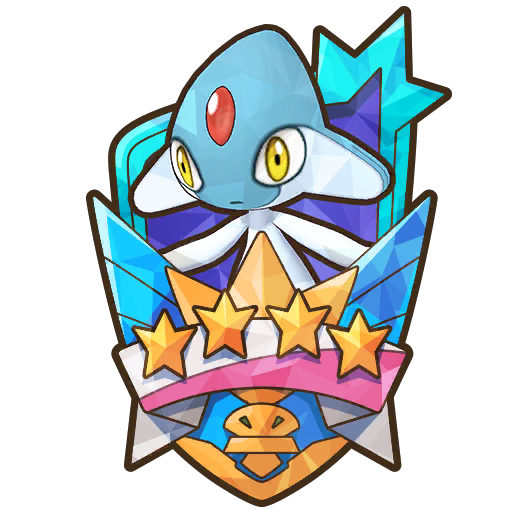

Azelf
Consejos para vencer
Los aumentos y descensos en la Defensa y Defensa Especial afectan más de lo normal a ambos bandos. Azelf se aprovecha de esto con sus pasivas Ataque Defensa ↓ +4 y Ataque Defensa Especial ↓ +4.
Cuando los PS de Azelf estén por encima de 50%, recibe menos daño de movimientos físicos. Y, cuando estén por debajo de 50%, recibe menos daño de movimientos especiales. A partir de la barra de PS 3, esto afectará también a los movimientos compi.
Cuando los PS de Azelf estén por encima de 50%, ejecuta movimientos especiales. Y, cuando estén por debajo de 50%, ejecuta movimientos físicos. Su movimientos compi siempre será físico.
Más información

Regirock

Consejos para vencer
Cada vez que un Pokémon aliado o rival aseste un golpe crítico, reduce la Defensa del Pokémon al que ha atacado. Además, Regirock es inmune a las bajadas de estadísticas, a excepción de las causadas por sus movimientos.
Durante las barras de PS 1 y 2, cuando Regirock use Defensa Férrea activará Bloqueo Críticos. Si interrumpes su ejecución, no usará el movimiento. Regirock intentará usar Defensa Férrea en la barra de PS 1 cuando sus PS bajen del 50% y en la barra de PS 2 la primera vez que su contador de movimiento compi esté a 3.
Durante la barra de PS 2, cada movimiento que acierte Regirock contra un oponente hará reducir su Ataque Especial. Además, impide que use su movimiento compi, pues hará aumentar su Defensa y Precisión en 1 y reducirá el Ataque de todos tus compis en 4.
Durante la barra de PS 3, cada movimiento de Regirock tiene un 30% de posibilidades de reducir la Defensa de todo tu equipo. Además, cada vez que use un movimiento compi, aumentará su Defensa en 1. Y, si debilita a un Pokémon, obtendrá el efecto Siguiente Crítico.
Más información

Moltres

Consejos para vencer
Cualquier cambio en el clima, tanto por Moltres como por los Pokémon de tu equipo, es permanente. Moltres cambiará el clima a Soleado al principio de cada barra de PS y, además, en las barras de PS 2 y 3, lo hará cuando sus PS bajen de la mitad.
El sol beneficia mucho a Moltres: aumenta la potencia de sus movimientos, hace que todos sus movimientos acierten e impide reducciones de características y que sufra problemas de estado; y en las barras de PS 2 y 3 hará que Moltres se cure tras cada acción.
Junto a lo antes mencionado, Moltres tiene una ventaja añadida en cada barra de PS cuando el clima es soleado: en la barra de PS 1 reducirá la Defensa de los Pokémon, en la barra de PS 2 siempre causará quemaduras y en la barra de PS 3 reducirá Ataque, Defensa, Ataque Especial, Defensa Especial y Velocidad de los Pokémon.
Es recomendable hacerlo retroceder. Pero, cada vez que se recupera, su resistencia al retroceso aumenta.
Más informaciónCombates
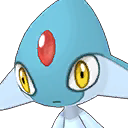
VS. Azelf

Usa todo el tiempo Malicioso. Después del primer movimiento compi de Azelf, cura a Moltres con una Poción. Antes de ejecutar el primer movimiento compi, usa el movimiento de entrenador de Hoja. Cada movimiento compi fulminará la barra de movimientos. No obstante, al cambiar a la barra de PS 2, usa el movimiento sincro de Moltres antes de que se bloquee para el resto del combate. Mínimo deberás recuperar un PM de las Pociones o el combate no será viable.
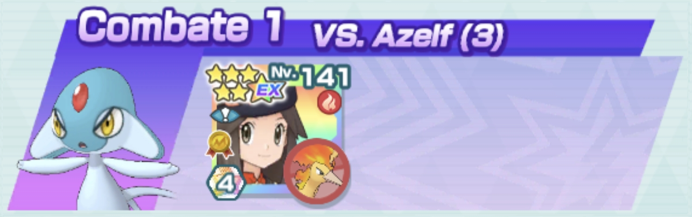

VS. Regirock

Empieza usando dos veces Fuego Sagrado, el movimiento de entrenador de Lira y Envite Ígneo. Eso te llevará a usar el movimiento compi de Entei. Sé más rápido que Regirock y continúa atacando con Fuego Sagrado para evitar que use Defensa Férrea. Trata de que Entei comience las barras de PS 2 y 3 con bastantes PS para que aguante los Avalancha de Regirock. Vuelve a usar Envite Ígneo en la barra de PS 2 cuando el sol vaya a irse y para rematar la barra de PS 3. Entei tiene Inmunidad Defensa ↓ como habilidad fortutia.
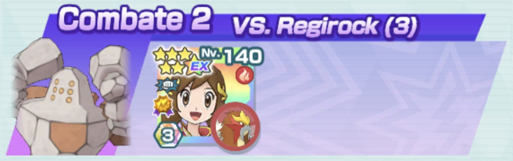

VS. Moltres

Tras usar Rayo Umbrío una vez, usa el movimiento de entrenador de Selene. Continúa acribillando a Moltres con Rayo Umbrío y vuelve a usar el movimiento de entrenador cuando el círculo vaya a irse. Remata a Moltres con el movimiento sincro. La dificultad del combate radica en ser más veloz que Moltres: cuando los PS de Moltres bajen de la mitad en cada barra de PS, Necrozma debe atacar antes de que lo haga Moltres. De lo contrario, el combate es imposible.
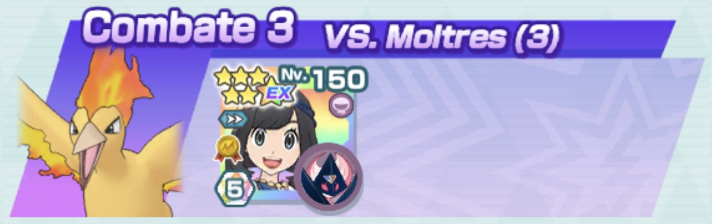
VS. Azelf

Reinicia si Necrozma no aumenta su Velocidad tras el primer Meteoimpacto. Continúa con el movimiento de entrenador de Elio y sigue atacando con Meteoimpacto. Debes usar el movimiento sincro justo después del movimiento compi. Eso sí, para ello debes tener al menos 1 PM en Sol Matinal para volver a activar el círculo. Si Azelf te hace suficiente daño como para gastar tan pronto los PM de Sol Matinal, deberás empezar de nuevo.
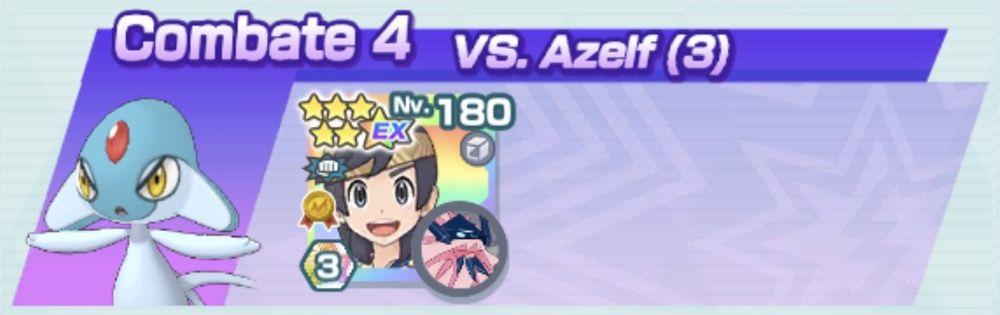
VS. Regirock

Reinicia si el movimiento de entrenador no recupera PM. Mantén la forma Siniestro para impedir bajadas de características y la forma Agua cuando necesites curarte. Cuantos más golpes esquive Greninja, mejor.
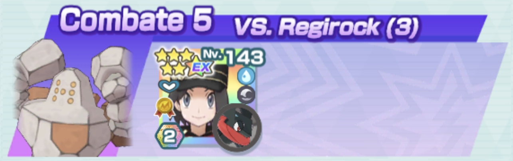
VS. Moltres
Ataca todo el tiempo con Colmillo Rayo. Usa solo Voltio Cruel cuando necesites el Campo Eléctrico. Es decir, si lo invoca tras usar el primer movimiento compi, espera a que ese se desvanezca. En cuanto a los movimientos de entrenador, resérvalos cuando Raikou esté en apuros.
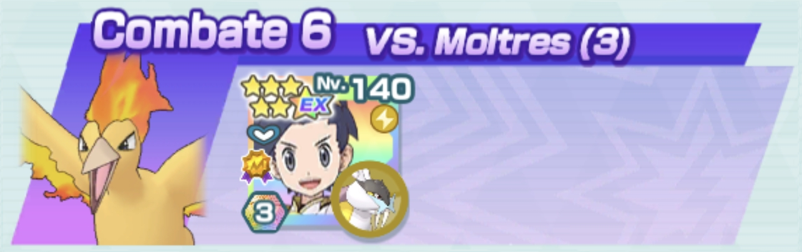
VS. Azelf

Comienza el combate en el siguiente orden: Energía Potenciadora, dos veces Giga Impacto, de nuevo Energía Potenciadora, movimiento de entrenador y movimiento compi. Este último reducirá los PS de Azelf a la mitad así que, si consigues que el siguiente movimiento de Ferroverdor se le adelante, el combate puede marchar bien. Continúa en la barra de PS 2 con Giga Impacto y, cuando el contador esté a 2, usa de nuevo el movimiento de entrenador. Ataca con el movimiento compi y trata otra vez de adelantarte a Azelf. Por último, en la barra de PS 3, usa Giga Impacto, el movimiento sincro y finiquita el combate con otro Giga Impacto.
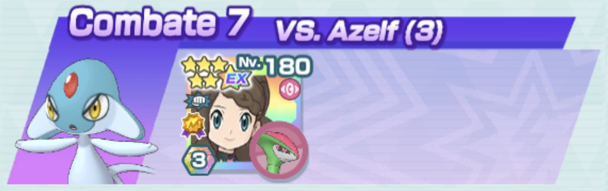
VS. Regirock

Tras usar el movimiento de entrenador, el combate consiste en atacar con Espada Santa y el movimiento compi cuando esté cargado. Vuelve a poner el círculo cuando se vaya y reserva el movimiento sincro para el inicio de la barra de PS 3.
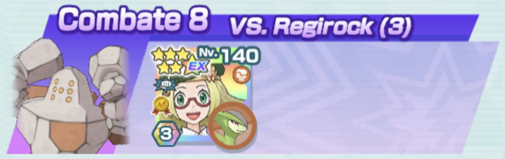
VS. Moltres

Comienza con el movimiento de entrenador de Lucho y usa una vez Rugido de Guerra para invocar la Zona Hielo EX. Con dos Rayo Hielo y el movimiento compi acabas con la barra de PS 1. Actúa rápido y usa el movimiento sincro al comenzar la barra de PS 2 antes de que Moltres ataque. La fulminarás con dicho movimiento. En la barra de PS 3, continúa atacando con Rayo Hielo. Pero, cuando los PS de Moltres bajen de la mitad, tu siguiente movimiento debe adelantársele. De lo contrario, el combate fracasará.
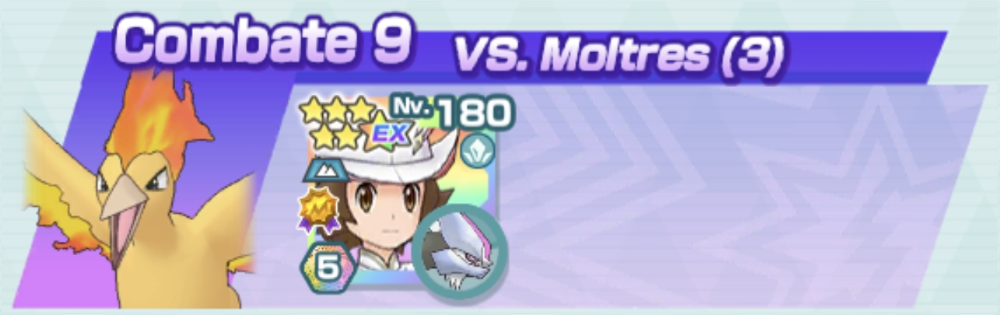
VS. Azelf

Usa dos veces Teraexplosión, continúa colocando de nuevo el círculo, movimiento de entrenador y de nuevo Teraexplosión. Acaba con la barra de PS 1 con el movimiento compi, con la barra de PS 2 con Rayo Hielo y con la barra de PS 3 con Ventisca. Furret tiene Resistencia Características ↓ +9.
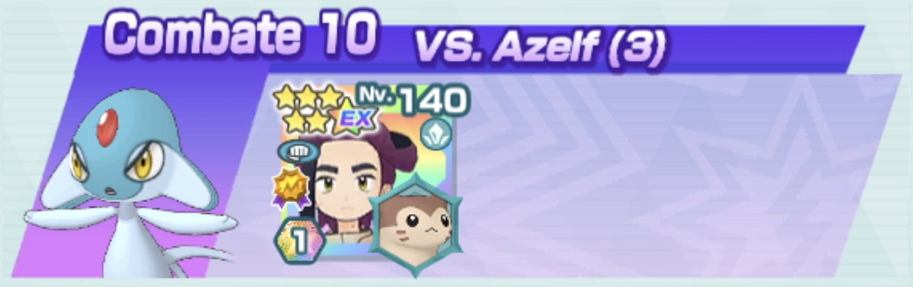
VS. Regirock

Reinicia si Corin no recupera PM en su movimiento de entrenador. Usa el movimiento sincro principalmente al inicio de cada barra de PS para que puedas llenar más rápido la barra de movimientos con Cadena Virulenta. Usa de nuevo el movimiento de entrenador de Corin cuando Pecharunt pierda la regeneración de PS y el contador de movimientos compi esté a 3. Si tienes suerte y recupera PM una vez más, vuelve a usarlo con el contador a 3 para poder usar un movimiento compi seguido de un movimiento sincro.
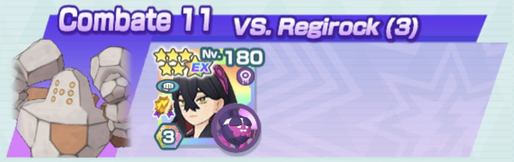
VS. Moltres

Comienza con Teraclúster, el movimiento de entrenador de Juliana y sigue con el movimiento sincro. Tras el movimiento compi, comienza la barra de PS 2 con el movimiento sincro y acaba con esta con otro Teraclúster. Finalmente, en la barra de PS 3, usa el movimiento Teracristal y con otro Teraclúster acabas el combate.
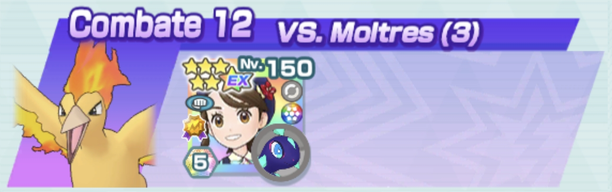
VS. Azelf

Usa primero Garrote Liana y el movimiento sincro antes de ordenar el movimiento de entrenador de Florian. Continúa atacando con Garrote Liana hasta poder usar el movimiento compi. Usa los movimientos sincro tras cada cambio de barra de PS. Eso sí, inicia la barra de PS 3 con Teraexplosión.
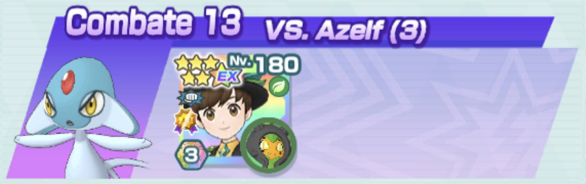
VS. Regirock

Primero haz retroceder a Regirock con Aire Afilado. Cuando lo hagas, usa dos veces el movimiento de entrenador de Gerania. Mínimo debe recuperar PM una vez. De lo contrario, reinicia. Vuelve a ordenar el movimiento de entrenador cuando Regirock retroceda. Ataca sin cesar a Regirock para que retroceda todo el tiempo posible. Pon Zona Voladora antes de comenzar la barra de PS 2 para fulminarla con un movimiento compi. Haz lo mismo en la barra de PS 3. Cura a Tornadus cuando esté en apuros y después de algún movimiento compi de Regirock.
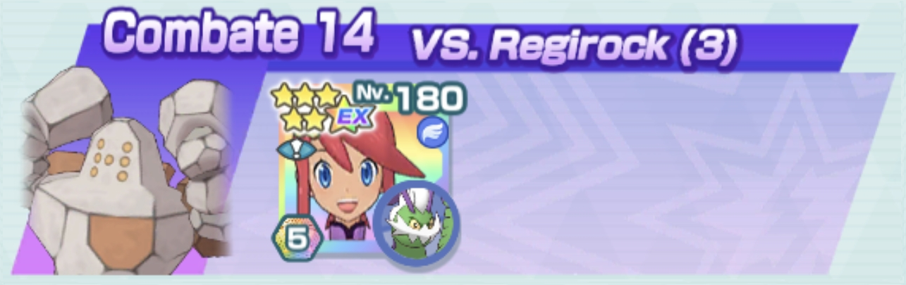
VS. Moltres

Usa Teraexplosión hasta reducir los PS de Moltres a la mitad. Entonces, usa Garra Dragón y continúa con Teraexplosión hasta cambiar de barra de PS. En la barra de PS 2, usa el movimiento de entrenador, el movimiento compi y acábala con Teraexplosión. La barra de PS 3, tras usar Enfado, usa Teraexplosión y acabarás con Moltres.
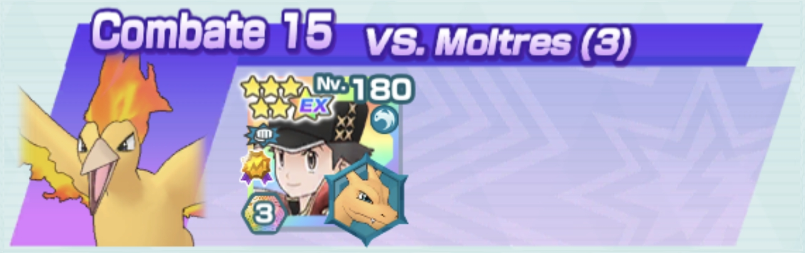
VS. Azelf

Reinicia si Lionel no recupera PM en el movimiento de entrenador. Ataca con Dracoflechas o el movimiento sincro según lo permita la barra de movimientos. Usa el movimiento compi dinamax después de que Azelf use su movimiento compi. Para que el combate marche hará falta reducir el Ataque Especial o la Precisión de Azelf para que Dragapult encaje mejor los golpes. Acaba la barra de PS 1 con el movimiento compi y no uses el siguiente hasta el inicio de la barra de PS 3 para fulminarla de un golpe.
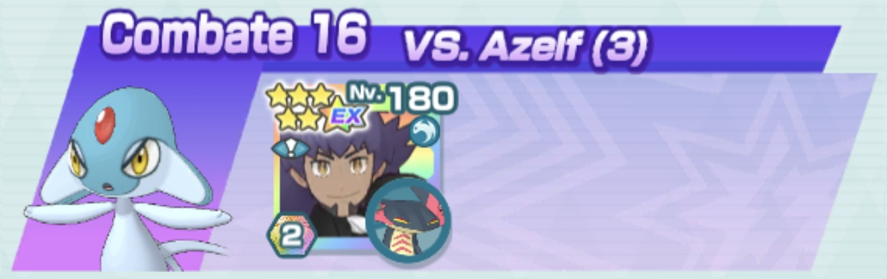
VS. Regirock

Ataca todo el tiempo con Láser Doble para maximizar las características de Farigiraf y con el movimiento compi cuando esté listo. Usa el movimiento de entrenador de Cinio cuando Farigiraf necesite curación. Al final del combate, cuando los PS de Regirock ronden el 20%, usa el movimiento sincro para derrotarlo.
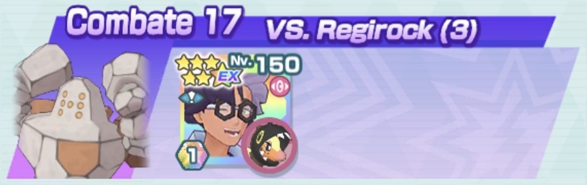
VS. Moltres

Tras el movimiento de entrenador de Erika, alterna entre Lluevehojas y el movimiento sincro para hacer daño a Moltres e ir curando a Lurantis. El combate requiere que Moltres retroceda lo suficiente para que Lurantis aguante durante todo el combate.
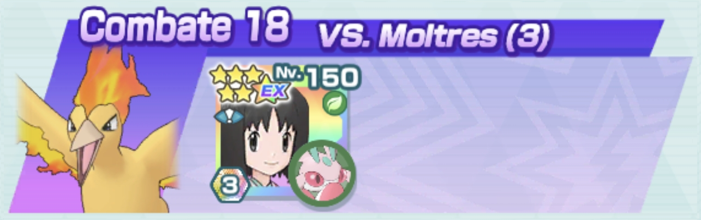
VS. Azelf
Usa el movimiento de entrenador de Levi. Siempre que puedas, paraliza a Azelf con Onda Trueno. La barra de Ps 1 la fulminas con el movimiento sincro. Reduce la barra de PS 2 con Teraexplosión y un uso del movimiento sincro. Cuando los PS de Azelf bajen de la mitad, usa el movimiento compi para acabar con la barra de PS 2. La barra de PS 3 es igual que la primera: paralizar a Azelf y movimiento sincro. Archaludon tiene Resistencia Características ↓ +9.
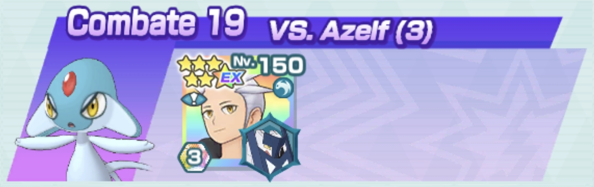
VS. Regirock

Tras usar el movimiento de entrenador de Erin, ataca todo el tiempo con Puño Drenaje. Pon una vez el círculo a mitad de la barra de PS 1 y otro al inicio de la barra de PS 2. Usa el movimiento sincro cuando Annihilape esté en apuros, pero uno de los usos tras el segundo círculo puede ir bien.
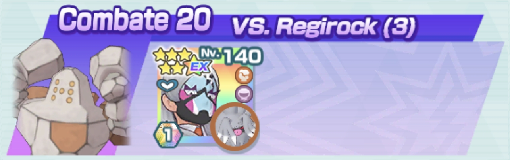
VS. Moltres
Reinicia si Ságita no recupera PM en su movimiento de entrenador y úsalo ambas veces al inicio del combate. Atava todo el tiempo con Giro Mortífero y el movimiento compi. El combate se complica en la barra de PS 2: si Moltres te hace retroceder frecuentemente con Tajo Aéreo o Ságita no recupera suficientes Pociones el combate se vuelve una tortura. Glimmora tiene Inmunidad Problemas de Estado como habilidad fortuita.
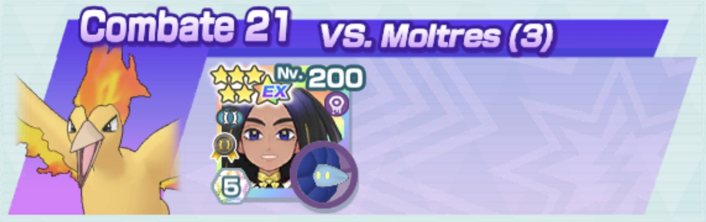
VS. Azelf

Envenénalo siempre que puedas y luego ataca todo el tiempo con Avalancha para hacerlo retroceder. Atiende a la Zona Veneno para que Glimmora pueda ir curándose.
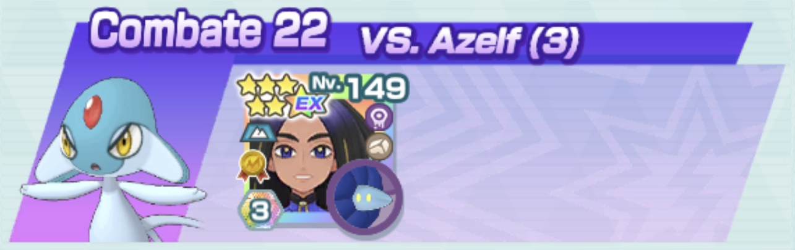
VS. Regirock

Comienza con el movimiento de entrenador de Eco. Inicia cada barra de PS paralizando a Regirock con Onda Trueno. En la barra de PS 1, ataca todo el tiempo con Aerochorro. En la barra de PS 2, usa el movimiento sincro y sigue con el movimiento compi. Finaliza la barra de PS 3 con el movimiento sincro y un par de Aerochorros.
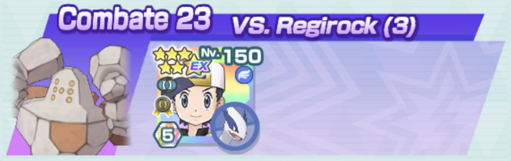
VS. Moltres

Simplemente usa el movimiento de entrenador y los movimientos sincro y compi cuando estén activados. El resto del combate acribilla a Moltres con Cabeza de Hierro.
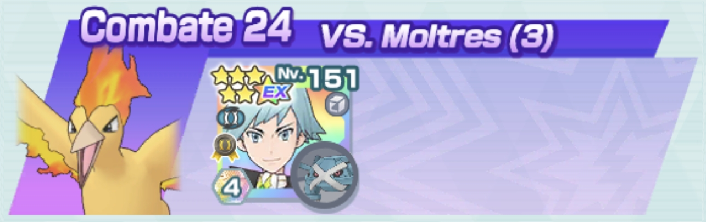
VS. Azelf

Ataca todo el tiempo con Llama Embrujada y usa los movimientos de entrenador de Berto antes del movimiento compi de Hatterene. Será necesario que Azelf falle algún movimiento antes del movimiento compi de Hatterene debido a bajada de Precisión o por estar confuso. De lo contrario, Hatterene podría debilitarse antes. En la barra de PS 2 continúa con Llama Embrujada pero, justo antes del movimiento compi, usa una vez Brillo Mágico. Inicia la barra de PS 3 con el movimiento dinamax para acabar con Azelf.
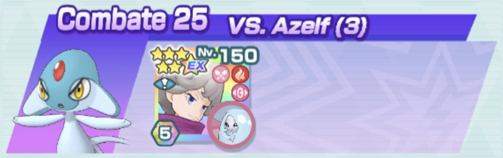
VS. Regirock

Reinicia si Zarala no recupera PM una vez en su movimiento de entrenador. Bufa a Jellicent con el movimiento sincro y ataca sin cesar con Pistola Agua. Puedes usar Recuperación cuando Jellicent esté en apuros, pero dudo que llegue a ocurrir.
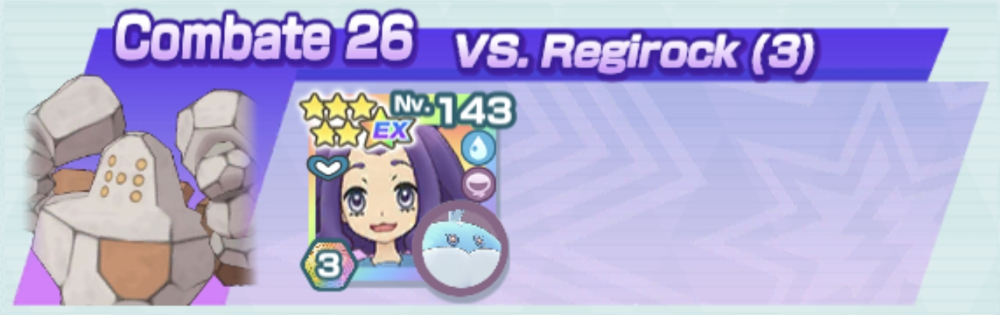
VS. Moltres
Ataca primero con Trueno Primigenio para tener Campo Eléctrico desde el inicio del combate. Sigue usando Rayo y el movimiento compi hasta acabar con las dos primeras barras de PS y en la última pon fin al combate con Trueno Triunfal.
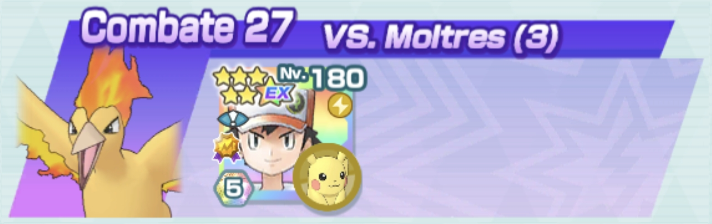
VS. Azelf
Usa dos veces Fiebre Dorada antes del movimiento de entrenador. Continúa atacando y activa cada uso del círculo cuando el contador baje a 2 para atacar inmediatamente con el movimiento compi. Si inicias la barra de PS 2 con el movimiento sincro aún tendrás que dar unos cuantos golpes más a Azelf, pero en la barra de PS 3 lo deja fuera de combate.
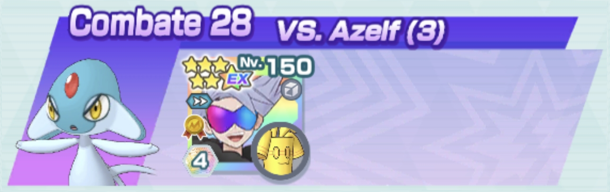
VS. Regirock
Usa los movimientos de entrenador de Damián cada vez que quieras que Mabosstiff regenere PS. Puedes atacar primero con Mordisco para aumentar la Velocidad de Mabosstiff pero no es totalmente necesario. Así pues, ataca con el movimiento sincro constantemente para acaba con Regirock.
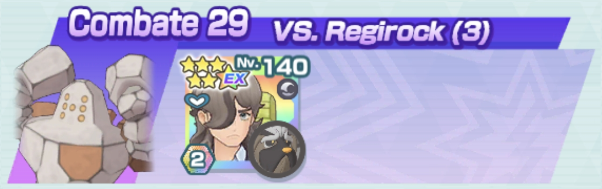
VS. Moltres

A 5 repeticiones la estategia varía con repecto a la de 3. Se empieza igual: Tormenta de Arena, Bucle Arena y movimiento de entenador. Usa el movimiento sincro pero sin acabar con la barra de PS 1. Procura que el inicio de la barra de PS 2 comience Garchomp con su movimiento compi para volver a poner tormenta de arena. Deja que Moltres se dañe por la arena y cuando sus PS ronden el 50%, acaba con el movimiento sincro. Inicia la barra de PS 3 con Tormenta de Arena y reduce sus PS cuidadosamente sin que bajen del 50%. Acaba con un movimiento sincro cuando los PS se aproximen a la mitad.
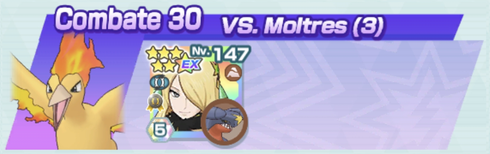
VS. Azelf

Reinicia si Cayena no recupera PM en Def. Esp. X Múltiple. Acribilla con Picotazo Veneno todo el tiempo. Guarda el movimiento sincro para la barra de PS 3, justo antes de usar el movimiento compi que debe acabar con Azelf. La casilla de Inmunidad Golpes Críticos previene de esos golpes que echan a perder todo el combate. Aún así está la problemática de que te pueda quemar en la barra de PS 1.
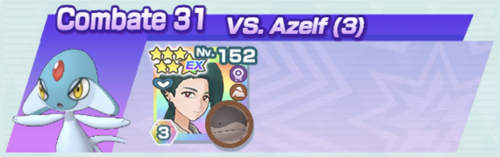
VS. Regirock

Alterna todo el combate entre Ataque Rápido y el movimiento de entrenador de Elaine. Puedes usar Rapidez de vez en cuando, sobre todo si aumenta el Siguiente Especial ↑ de Eevee. Aunque no es estrictamente necesario, puedes reservar Protección para evitar el daño de Hiperrayo en la barra de PS 3.
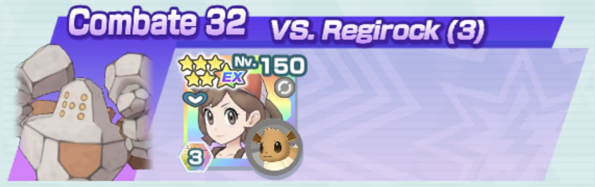
VS. Moltres

Kyogre impide poner el sol a Moltres en todo momento y la Lluvia EX favorece mucho. Aunque los movimientos de Kyogre consuman muchas barras, no tienes que preocuparte porque puede con Moltres de sobra.
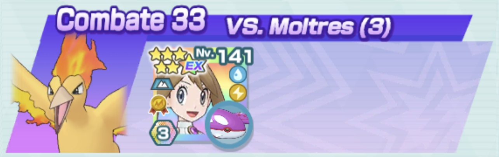
VS. Azelf

Usa el movimiento de entrenador de Bruno y ataca sin cesar con Resplandor de Latios. Puedes paralizar a Azelf con Dragoaliento, pero cuidado en la segunda mitad de la barra de PS 2: Azelf puede usar Imagen y podría hacerte más daño. En la barra de PS 3 sí puedes usarlo para reducir los PS de Azelf poco a poco y maximizar el daño del movimiento compi de Latios antes de que los PS de Azelf bajen de la mitad.
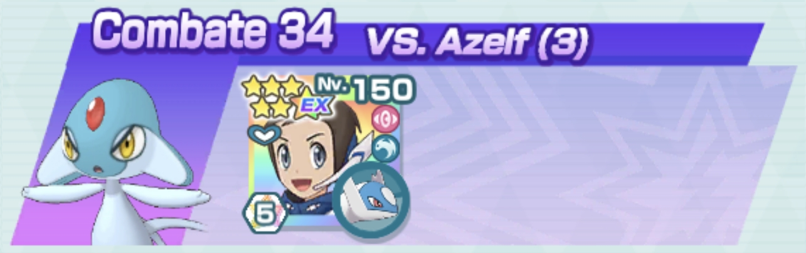
VS. Regirock

Antes de meter el primer Campo Psíquico, usa primero dos veces Poder Reserva. Ahora bien, si no recupera PM en Campo Psíquico, reinicia. Ataca todo el tiempo con Poder Reserva y coloca Campo Psíquico al inicio de cada barra de PS. Si recuperas aún más PM, puedes invocarlo al final de las barras de PS 2 o 3.
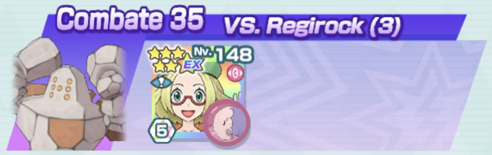
VS. Moltres

Usa el movimiento de entrenador, evita el primer ataque de Moltres con Golpe Umbrío y reduce los PS restantes con Bola Somba. Acaba con la barra de PS 2 con el movimiento compi y otro Golpe Umbrío. Inicia la barra de PS 3 con el movimiento sincro y acaba con Golpe Umbrío.
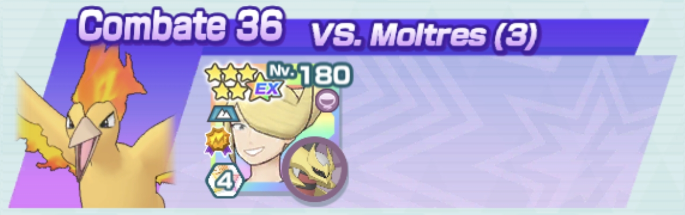
VS. Azelf


Es recomendable que Ástrid recupere PM en su movimiento de entrenador. Usa el primer movimiento compi con Togepi e intenta que aguante el máximo tiempo en combate, dándole las Pociones de ser necesario. Aumenta las características de Sigilyph todo lo que puedas para que su movimiento compi y Poder Reserva hagan un daño descomunal a Azelf.
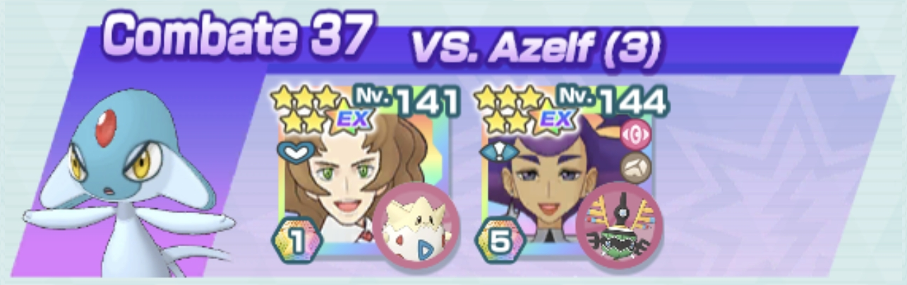
VS. Regirock

Usa el movimiento de entrenador de Florian y ataca todo el tiempo con Electroderrape. En la barra de PS 1, justo cuando los PS de Regirock bajen de la mitad, usa el primer movimiento sincro. Pero debes hacerlo antes de que Regirock use Defensa Férrea. Cuando empiece la barra de PS 2, vuelve a poner Campo Eléctrico. Continúa con Electroderrape y, en la barra de PS 3, antes de usar un movimiento compi, vuelve a poner Campo Eléctrico y usa el movimiento sincro seguidamente.
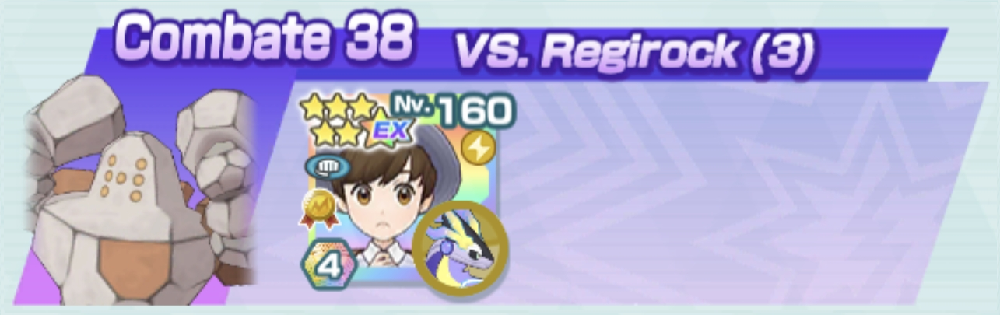
VS. Moltres

Empienza con ¡A vibrar con la emoción! y ataca constantemente con Teraexplosión. Usa el movimiento compi cuando Moltres esté retrocediendo. Reserva el movimiento sincro para la barra de PS 2, al comienzo y justo después de que Moltres retroceda.
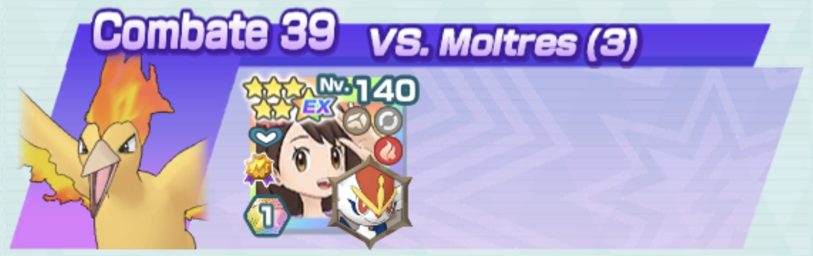
VS. Azelf


Mientras Lapras duerme a Azelf, Solgaleo hace todo lo demás. No hay mucho más que añadir.
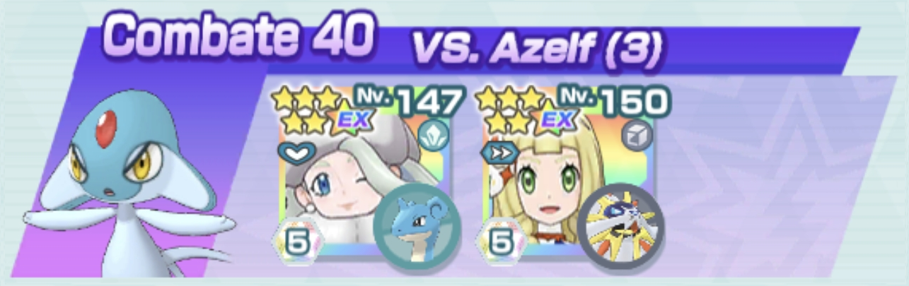
VS. Regirock

Primero usa el movimiento de entrenador de Henzo y será necesario que recupere PM. De no hacerlo, tendrás que reiniciar. A continuación, ejecuta ambos usos del movimiento sincro. El resto del combate es atacar con Golpe Cabeza y el movimiento compi cuando esté cargado. Atiende a las Pociones, pues será necesario recuperar, en el peor de los casos, hasta dos Pociones.
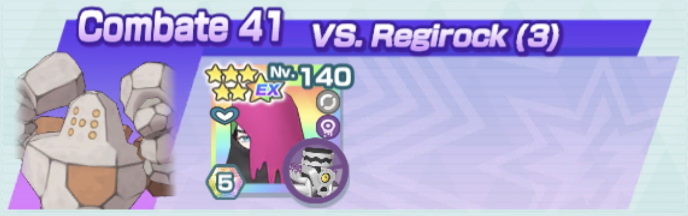
VS. Moltres

Ataca todo el tiempo con Fitoimpulso manteniendo siempre el Campo de Hierba activo. Cada vez que retroceda Moltres, aprovecha para bufar a Celebi o invocar el campo. Si eres preciso con el timing de los retrocesos, el combate no debería resultar un problema. Sin embargo, si Moltres consigue colar algún movimiento cuando Celebi no ataque, puede darte problemas.
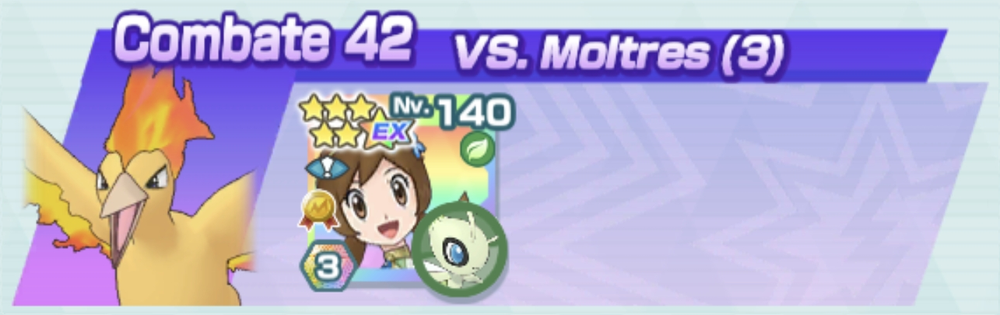
VS. Azelf


Usa Velocidad X Múltiple de Serra y el movimiento de entrenador de Roxy sobre Scrafty. Umbreon atacará todo el tiempo con Alarido para reducir el Ataque Especial de Azelf. En cuanto a Scrafty, en la primera mitad de las barras de PS usará Onda Certera y en la segunda Triturar. Usa el primer movimiento compi con Umbreon y los siguientes con Scrafty. Usa el movimiento de entrenador de Serra sobre Umbreon para que aguante más, y aumenta aún más su durabilidad con las Minipociones de Roxy.
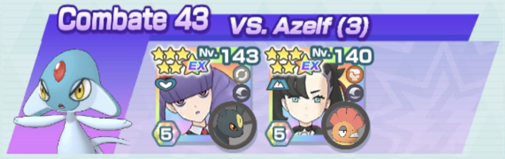
VS. Regirock

Tras usar el movimiento de entrenador, durante la barra de PS 1 alterna entre Impresionar y, cuando Regirock retroceda, usa Cañón Batidor. A partir de la barra de PS 2, Regirock ganará inmunidad al retroceso tras sufrirlo una vez, así que intenta que eso ocurra antes de que use por primera vez Defensa Férrea. El resto del combate continúa con Cañón Batidor. Usa Teraexplosión al inicio de la barra de PS 3. Los demás Campos de Hierba puedes invocarlos en cuanto desaparezca el primero que se produce por el rol de Entorno.
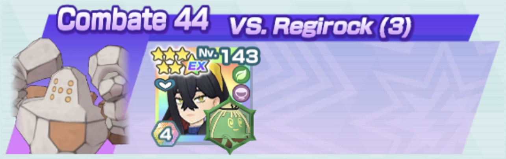
VS. Moltres


La casilla Acción Cielo Despejado +9 de Rayquaza elimina el clima cuando ataca. El primer movimiento compi debe ejecutarlo Rayquaza para megaevolucionar. Los demás lo hará Psyduck para ir curando al equipo. Intenta que Misty recupere PM con su movimiento de entrenador.
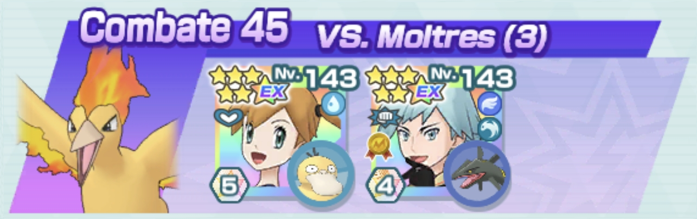
VS. Azelf


Reinicia si Roxy no recupera PM en su movimiento de entrenador y usa ambos usos junto a Especial X Múltiple de Nanci. Reduce primero la ofensiva de Azelf con Alarido de Liepard. Sin embargo, antes que Liepard use su movimiento compi (el primero lo hará Serperior) deberá paralizar y reducir la Defensa Especial de Azelf. Tendrás que paralizar a Azelf en cada barra de PS antes de usar el movimiento compi. Y, en la barra de PS 3, usa constantemente Onda Trueno para que el movimiento compi de Liepard se ejecute antes que el de Azelf. Serperior usará Gigadrenado todo el combate para ir aguantando.
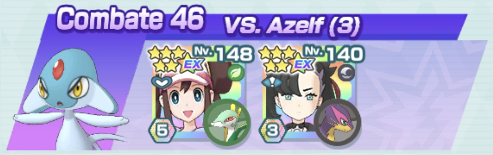
VS. Regirock

Aumenta el crítico de Cetitan y ataca con Colmillo Hielo para frenar a Regirock todo lo posible durante la barra de PS 1. Usa el primer movimiento de entrenador de Grusha justo antes del primer movimiento compi. Los demás usos hazlos cuando Cetitan necesite curación. Puedes usar los movimientos sincro para evitar dos de estos tres movimientos: Terremoto en la barra de PS 1, Cabeza de Hierro en la barra de PS 2 o Hiperrayo en la barra de PS 3.
VS. Moltres


Empieza con Pisotón para hacer retroceder a Moltres y evitar que use Malicioso. De no hacerlo, sería preferible reiniciar el combate. Ambos se van curando con el sol y con la regeneración de PS. Leafeon hace mucho daño con el sol.
VS. Azelf

La peor parte del combate es lograr que ambas recuperen PM en su movimiento de entrenador. Cuando lo hagan, Wigglytuff intentará hacer retroceder a Azelf con Golpe Cabeza mientras Kilowattrel ataca con Trueno. Como Azelf es más vulnerable a los movimientos especiales en las primeras mitades de las barras de PS, puedes atacar todo el tiempo con Wigglytuff hasta que Kilowattrel pueda usar su movimiento compi. Usa los círculos en las barras de PS 2 y 3.
VS. Regirock

Intenta hacer retroceder primero a Regirock antes de usar el movimiento de entrenador de Pegaso. Mínimo debe recuperar una vez PM. Tras bufar a Swellow, sigue atacando con Tajo Aéreo. Usa Vuelo para evitar algunos movimientos de Regirock, especialmente aquellos más peligrosos.
VS. Moltres


Guarda el movimiento de entrenador de Sémola hasta la barra de PS 2 y protegerte de las quemaduras. Moltres de Galar hace bastante daño y hace retroceder casi siempre, así que se come al otro Moltres.
VS. Azelf


Comienza con un movimiento de entrenador de Pegaso y Directo+ de Guzmán. A continuación, usa Pin Misil de Golisopod para activar el movimiento sincro de Noctowl. Aprovecha cuando Azelf esté saboteado para terminar de bufar a Golisopod. Usa el primer movimiento compi con Noctowl para conseguir el boost de determinación. Continúa con Pin Misil + Hipnosis hasta usar el movimiento compi de Golisopod y acabar con cada una de las barras de PS de Azelf.
VS. Regirock

Clavel debe recuperar PM en ambas órdenes. Tras bufar a Sprigatito, ataca todo el tiempo con Recurrente y el movimiento compi. Si puedes usar los movimientos compi al inicio de las barras de PS o cuando Regirock no tenga el bloque de críticos, mejor. Necesitas tener suerte tanto para curarte como para esquivar los movimientos de Regirock.
VS. Moltres


Empieza invocando lluvia. Ambos entrenadores deben recuperar PM al menos una vez, pero intenta que Alana use los suyos mientras Pelipper hace retroceder a Moltres con Tajo Aéreo. Entretanto, Empoleon debe reducir la Velocidad de Moltres con Rayo Burbuja. Durante la barra de PS 1 será Pelipper quien use todo el tiempo el movimiento compi. Deja uno cargado para que, al iniciar la barra de PS 2, sea Empoleon quien lo use y la fulmine. Vuelve a invocar lluvia en la barra de PS 3, reduce los PS de Moltres si llegar a la mitad para que Empoleon pueda acabar con él con otro movimiento compi.
VS. Azelf


Usa las órdenes de los entrenadores. Si Giovanni no recupera PM en la suya, reinicia. Ataca con Patada Tropical para reducir el Ataque de Azelf. Usa el primer movimiento compi con Nidorino y los sucesivos con Tsareena siempre y cuando Azelf esté confuso. Será necesario recuperar Pociones para poder completar el combate.
VS. Regirock

Reinicia si no recupera PM en el movimiento de entrenador. Guarda el otro uso para la barra de PS 2 después de que Regirock use el movimiento compi. Haz todo el daño que puedas en la barra de PS 1 pero trata de acabarla antes de que Regirock use Defensa Férrea. Usa los movimientos sincro para las barras de PS 2 y 3.